Basic In-Game Style Transfer Tutorial (Outdated)
Update 3/29/2021: End-to-End In-Game Style Transfer Tutorial
Introduction
Unity has finally released the in-game style transfer project they’ve been teasing in the Barracuda documentation. Their implementation is slightly more polished than my early attempts. And by slightly, I mean they seem to have addressed every major complaint I had with my implementation. Be sure to check out their sample project as well as the accompanying blog post.
It’s exciting that Unity has started releasing projects that explore alternative uses for the Barracuda library. Hopefully, they’ll explore other deep learning applications in future projects. I would love to see projects that use GANs for dynamically generating in-game content.
I plan to work on a more sophisticated implementation for in-game style transfer in the future, perhaps using some tricks from Unity’s implementation. However, I wanted to start with a basic implementation to serve as a baseline.
This tutorial will cover how to use trained models from the fast_neural_style project provided by PyTorch. The models take in regular images and return stylized versions. We’ll get our input images from the in-game camera and display the stylized output to the user.
Important: This is meant as a simple proof of concept and requires a powerful GPU to get playable frame rates. An RTX 20-series equivalent or newer is recommended.
Select a Unity Project
I’ll be using the Kinematica_Demo project provided by Unity for this tutorial. It provides a great character model for testing different styles. However, feel free to follow along with a different project. This one is a bit large and takes a while to open the first time.
Download Kinematica Demo
You can download the Unity project by clicking on the link below. The zipped folder is approximately 1.2 GB.
- Kinematica_Demo_0.8.0-preview: (download)
Add Project to Unity Hub
Once downloaded, unzip the folder and add the project to Unity Hub using the Add button.
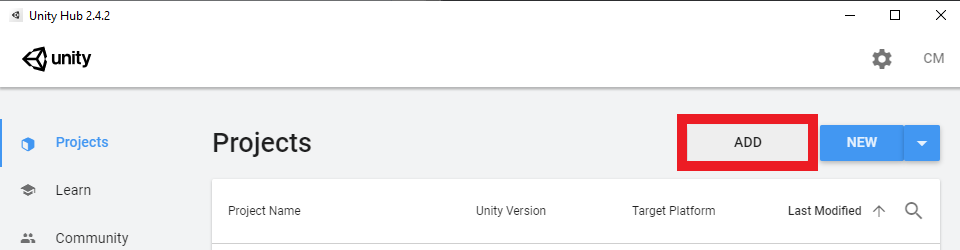
Set the Unity Version
Select a Unity version from the drop-down menu. The demo project was made using Unity 2019.4.5f1. You can use a later 2019.4 release if you don’t have that version installed.
- Unity 2019.4.13: (download)
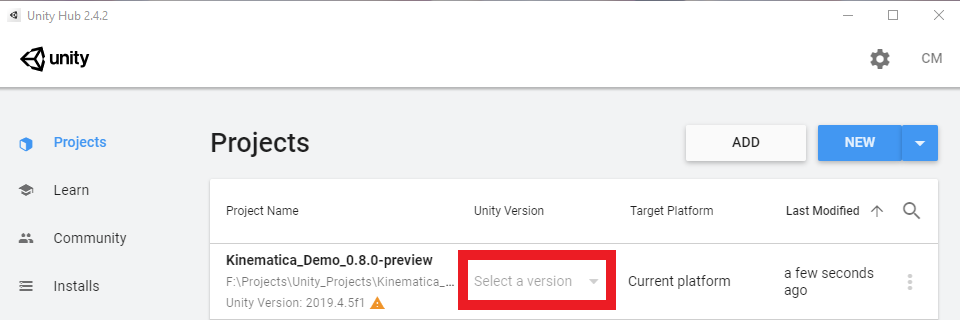
Open the Project
Now we can open the project. We’ll be prompted to upgrade the project to the selected Unity version. Click Confirm in the popup to upgrade the project. As mentioned earlier, this project takes a while to load the first time.

Install Barracuda Package
We’ll install the Barracuda package once the project has finished loading. Select the Package Manager tab in the Unity editor and type Barracuda into the search box.
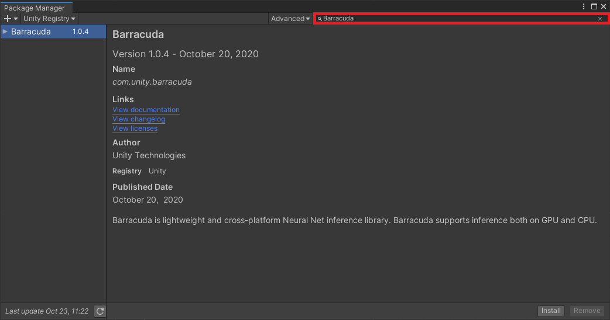
Click the Install button to install the package.

Create Style Transfer Folder
We’ll place all our additions to the project in a new asset folder called Style_Transfer. This will help keep things organized.

Import Models
Next, we need to add some style transfer models. PyTorch models need to be exported to the ONNX format before being imported to Unity. Fortunately, PyTorch provides built-in support for exporting to ONNX (tutorial).
Download ONNX Files
You can download some exported style transfer models from the links below.

{kind=link}

Import ONNX Files to Assets
Open the Style_Transfer folder and make a new folder called Models.
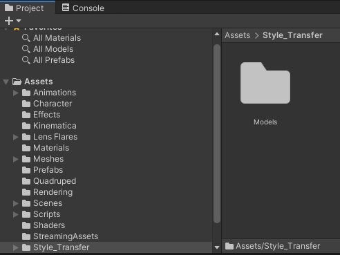
Drag and drop the ONNX files into the Models folder.
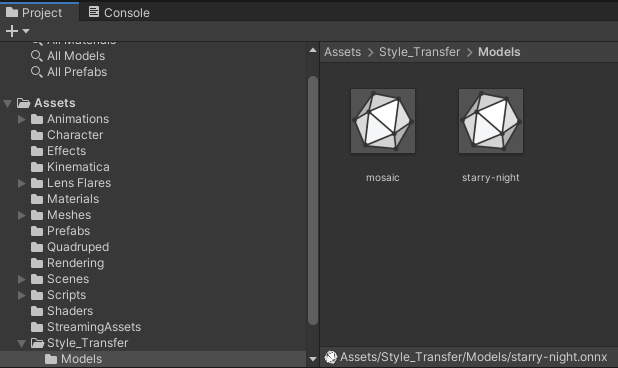
Prepare Render Textures
Our basic process will involve taking the current frame from the in-game camera, feeding it to the model, getting the output, and displaying the processed output to the user. We’ll store the current camera frame and processed output in separate render textures.
Create Textures Folder
Add a new folder called Textures in the Style_Transfer folder.
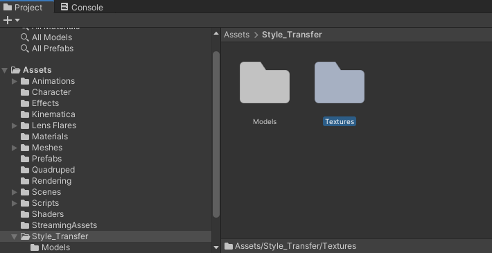
Create Asset Files
Open the Textures folder and create two new Render Texture assets.
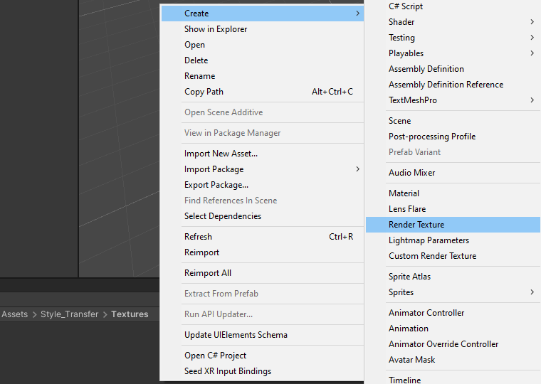
Name the new assets CameraInput, ProcessedOutput.
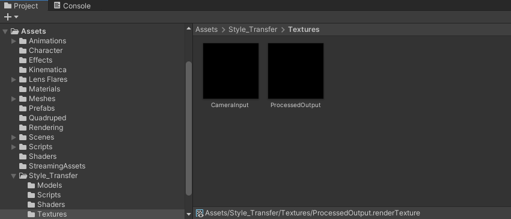
Update Size Parameters
We need to use a fairly low resolution to get playable frame rates. Click an empty space in the Textures folder and press Ctrl-a to select both render textures. Set the size the parameter to 720 x 540 in the Inspector tab. Feel free to try higher resolutions if you happen to have an RTX 30-series or equivalent GPU.
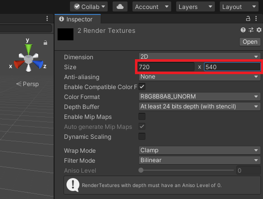
Create a Compute Shader
We can perform both the preprocessing and postprocessing operations on the GPU since both the input and output are images. We’ll implement these steps in a compute shader.
Create the Asset File
Open the Style_Transfer folder and create a new folder called Shaders. Enter the Shaders folder and right-click an empty space. Select Shader in the Create submenu and click Compute Shader. We’ll name it StyleTransferShader.

Remove the Default Code
Open the StyleTransferShader in your code editor. By default, the ComputeShader will contain the following.

Delete the CSMain function along with the #pragma kernel CSMain. Next, we need to add a Texture2D variable to store the input image. Name it InputImage and give it a data type of <half4>. Use the same data type for the Result variable as well.

Create ProcessInput Function
The style transfer models expect RGB channel values to be in the range [0, 255]. Color values in Unity are in the range [0,1]. Therefore, we need to scale the three channel values for the InputImage by 255. We’ll perform this step in a new function called ProcessInput as shown below.
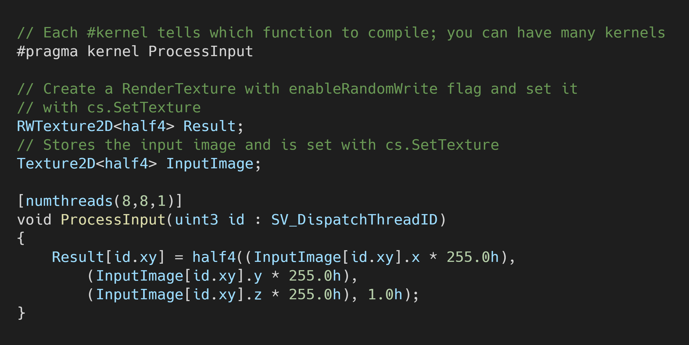
Create ProcessOutput Function
The models are supposed to output an image with RGB channel values in the range [0, 255]. However, it can sometimes return values a little outside that range. We can use the built-in clamp() method to make sure all values are in the correct range. We’ll then scale the values back down to [0, 1] for Unity. We’ll perform these steps in a new function called ProcessOutput as shown below.

Now that we’ve created our ComputeShader, we need to execute it using a C# script.
Create StyleTransfer Script
We need to make a new C# script to perform inference with the style transfer models. This script will load the model, process the input, run the model, and process the output.
Create the Asset File
Open the Style_Transfer folder and create a new folder called Scripts. In the Scripts folder, right-click an empty space and select C# Script in the Create submenu.
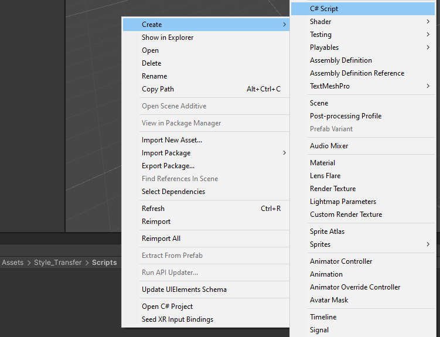
Name the script StyleTransfer.
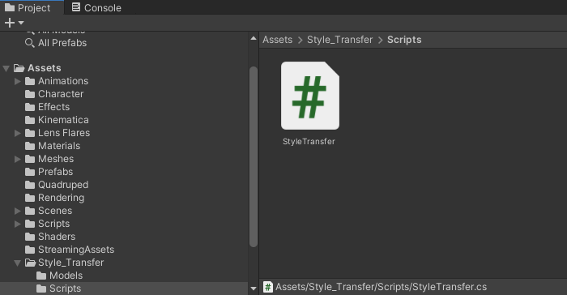
Add Unity.Barracuda Namespace
Open the StyleTransfer script and add the Unity.Barracuda namespace at the top of the script.
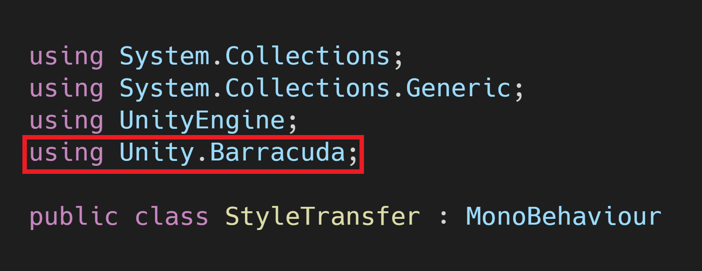
Create RenderTexture Variables
We need to create some public variables that we can use to access our two render texture assets in the script.
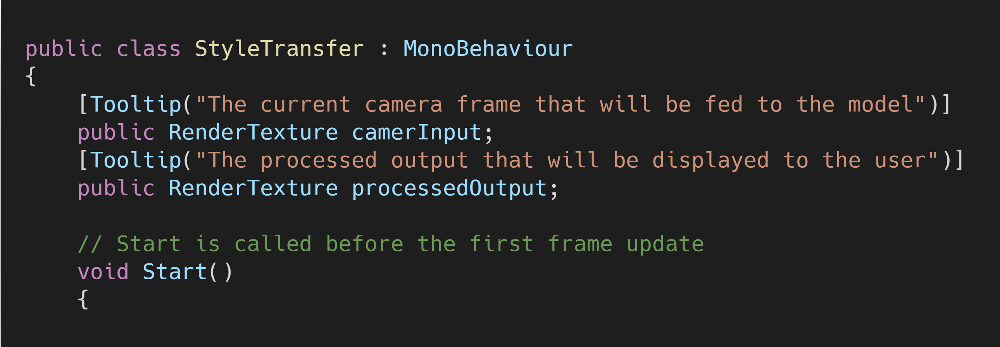
Create StyleTransferShader Variable
Next, we’ll add a public variable to access our compute shader.
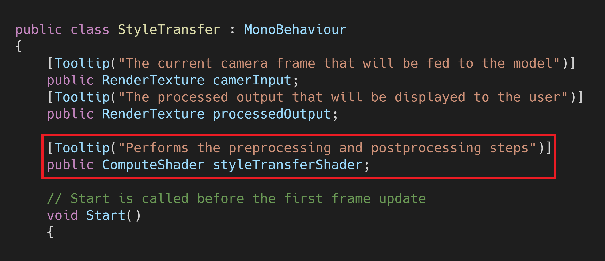
Create Barracuda Variables
Now we need to add a few variables to perform inference with the style transfer models.
Create modelAsset Variable
Make a new public NNModel variable called modelAsset. We’ll assign one of the ONNX files to this variable in the Unity Editor.
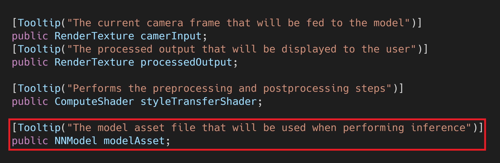
Create workerType Variable
We’ll also add a variable that let’s us choose which backend to use when performing inference. The options are divided into CPU and GPU. Our preprocessing pipeline runs entirely on the GPU so we’ll be sticking with the GPU options for this tutorial series.
Make a new public WorkerFactory.Type called workerType. Give it a default value of WorkerFactory.Type.Auto.
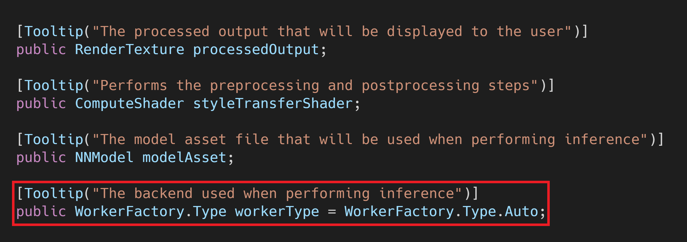
Create m_RuntimeModel Variable
We need to compile the modelAsset into a run-time model to perform inference. We’ll store the compiled model in a new private Model variable called m_RuntimeModel.
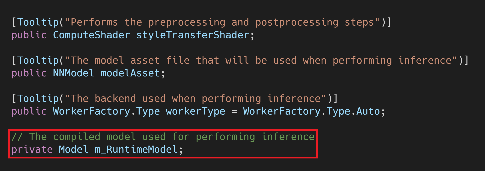
Create engine Variable
Next, we’ll create a new private IWorker variable to store our inference engine. Name the variable engine.
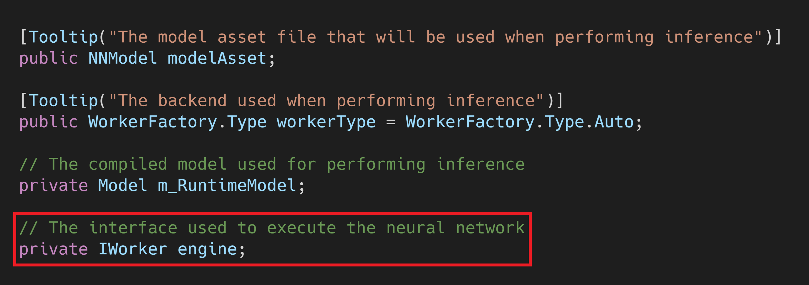
Compile the Model
We need to get an object oriented representation of the model before we can work with it. We’ll do this in the Start() method and store it in the m_RuntimeModel.
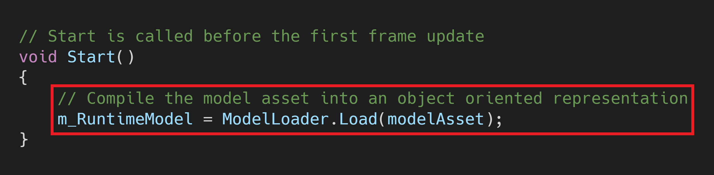
Initialize Inference Engine
Now we can create a worker to execute the modified model using the selected backend. We’ll do this using the WorkerFactory.CreateWorker() method.
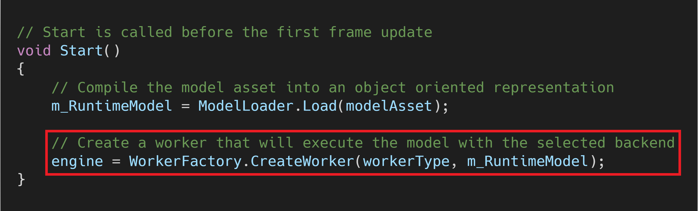
Release Inference Engine Resources
We need to manually release the resources that get allocated for the inference engine. This should be one of the last actions performed. Therefore, we’ll do it in the OnDisable() method. This method gets called when the Unity project exits.

Create ToTexture2D() Method
We’ll make a new method to copy the data from a RenderTexture to a new Texture2D. We’ll need to call this method before performing both the preprocessing and postprocessing steps. The method will take in the source RenderTexture and the format for the new Texture2D.
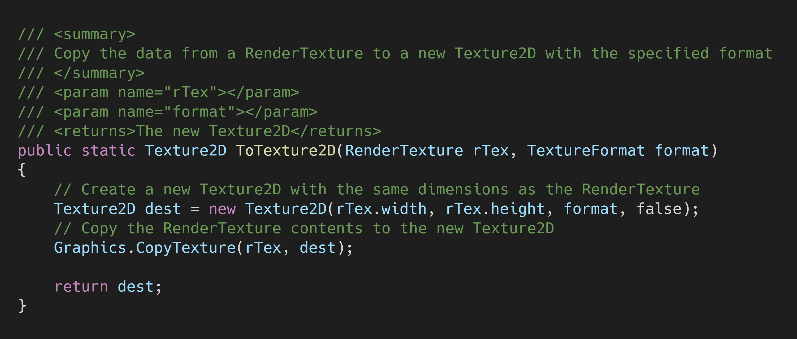
Create ProcessImage() Method
Next, we’ll make a new method to execute the ProcessInput() and ProcessOutput() functions in our ComputeShader. This method will take in the image that needs to be processed as well as a function name to indicate which function we want to execute. We’ll need to store the processed images in textures with HDR formats. This will allow us to use color values outside the default range of [0, 1]. As mentioned previously, the model expects values in the range of [0, 255].
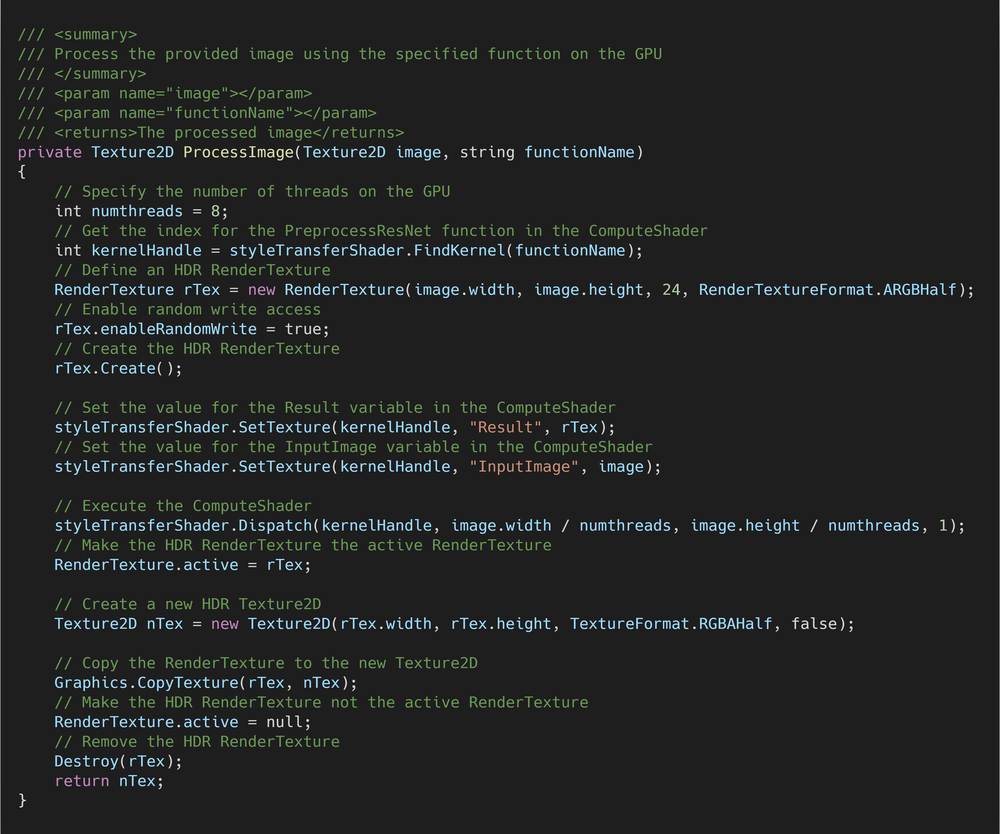
Process Input Image
Now we can process the current camera frame. We’ll call the ToTexture2D() method at the top of the Update method. The cameraInput is not an HDR texture so we’ll use an SDR format for the new Texture2D. We’ll then call the ProcessImage() method with new Texture2D as input.
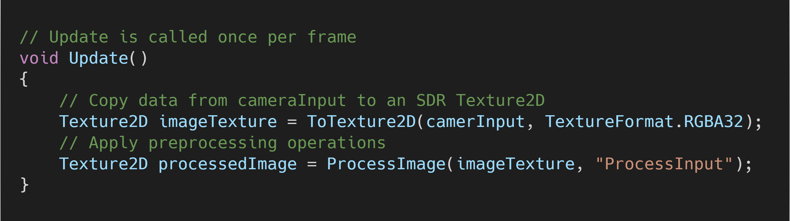
Perform Inference
Next, we’ll feed the processedImage to the model and get the output. We first need to convert the processedImage to a Tensor.
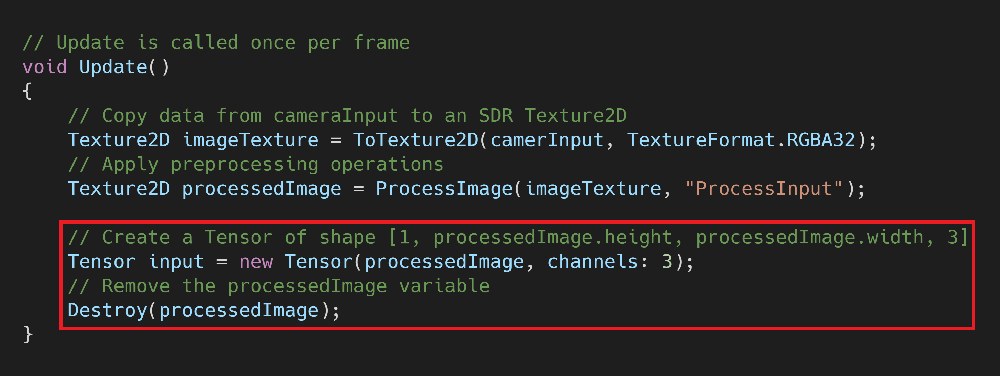
We’ll then use the engine.Execute() method to run the model with the current input. We can store the raw output from the model in a new Tensor.
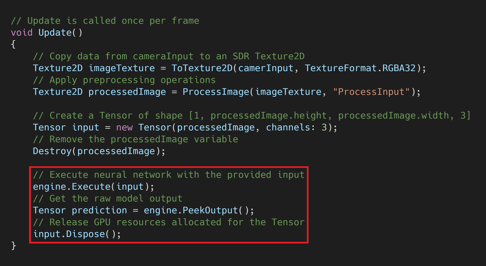
Process the Output
We need to process the raw output from the model before we can display it to the user. We’ll first copy the model output to a new HDR RenderTexture.
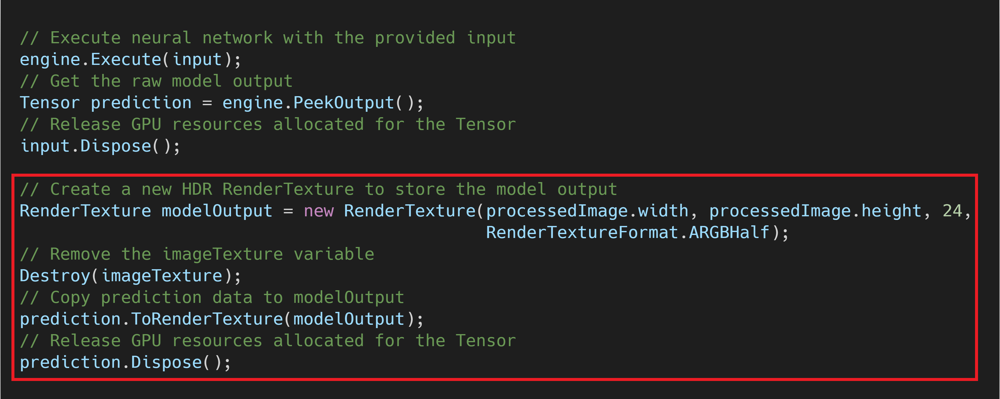
We’ll then copy the data to a Texture2D and pass it to the ProcessImage() method. This time we’ll be executing the ProcessOutput() function on the ComputeShader.
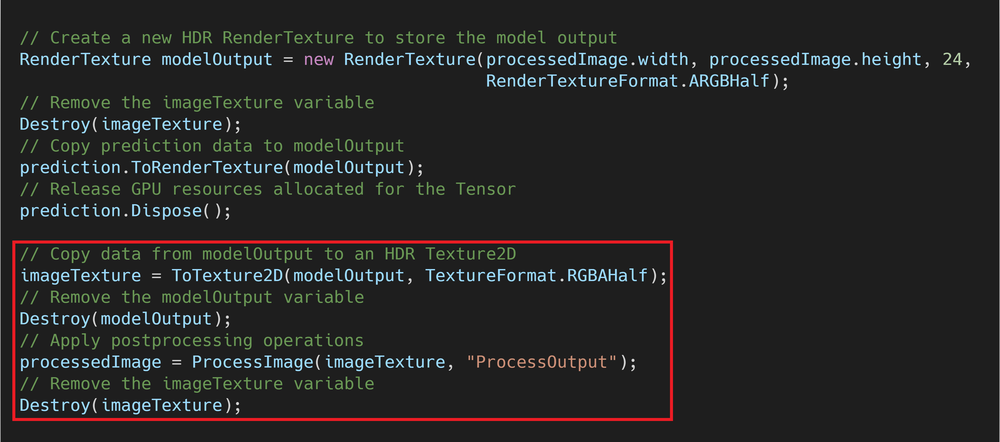
Display the Processed Output
We can finally display the stylized image by using the Graphics.Blit() method to copy the final image to processedOutput.
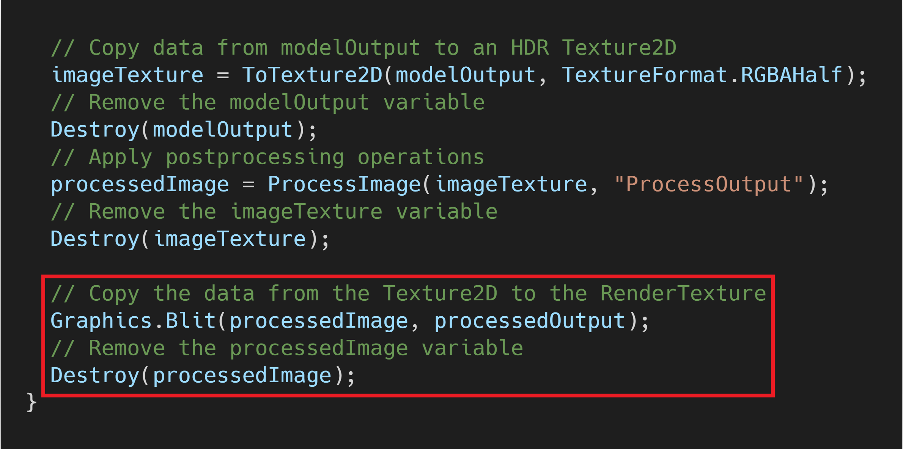
Next, we’ll need to modify the project scene to use the StyleTransfer script.
Open the Biped Scene
In the Assets window, open the Scenes folder and double-click on the Biped.unity asset. You don’t need to save the current scene if you get prompted to do so.

Create Style Converter
To run the StyleTransfer script, we need to attach it to a GameObject in the scene.
Create an Empty GameObject
In the Hierarchy tab, right-click an empty space and select Create Empty from the menu. Name the empty GameObject StyleConverter.
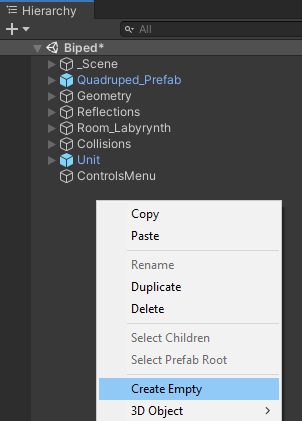
Attach the StyleTransfer Script
With the StyleConverter object selected, drag and drop the StyleTransfer script into the Inspector tab.
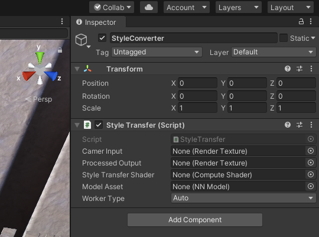
Assign the Assets
We need to assign the render textures, compute shader and one of the ONNX files to their respective parameters in the Inspector tab. I’ll start with the mosaic model. We’ll also set the Worker Type to Compute Precompiled.
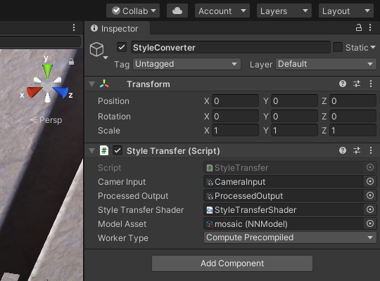
Set Camera Target Texture
Select the _Scene object in the Hierarchy tab. In the dropdown, select the Main Camera object.
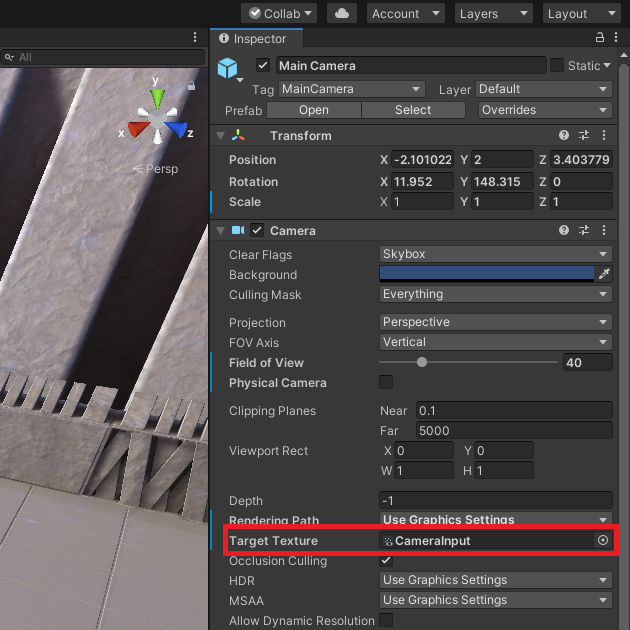
Create a Screen
Right-click an empty space in the Hierarchy tab and select Raw Image in the UI submenu. Name it Screen.
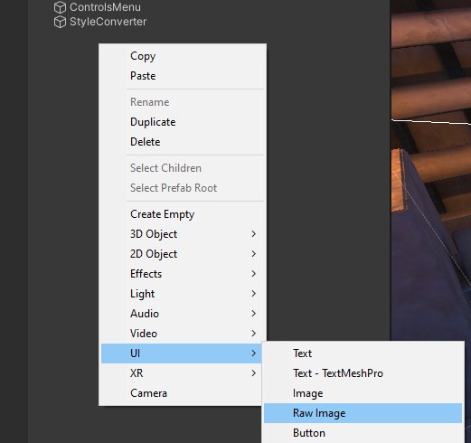
Adjust the Anchor Presets
With the Screen object selected, click on the anchor presets box in the Inspector tab outlined below.

Select the option in the bottom right corner that’s outlined below.

Next we need to set all the Rect Transform values to zero. This will cause the Screen to take up the entire display.
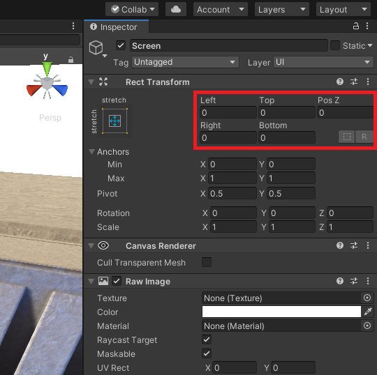
Set the Screen Texture
With the Screen object still selected, drag and drop the ProcessedOutput asset into the Texture parameter in the Inspector tab.
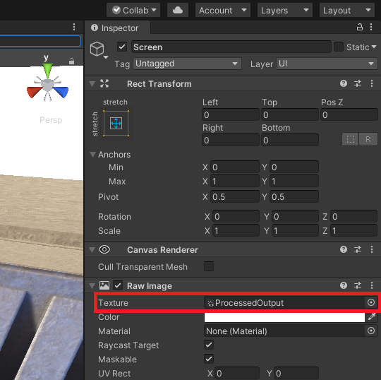
Adjust the Game Tab
Our last step is to set up the game tab for our chosen resolution.
Set the Aspect Ratio
My chosen resolution of 720 x 540 has a 4:3 aspect ratio. You can change the aspect ratio in the drop-down menu.
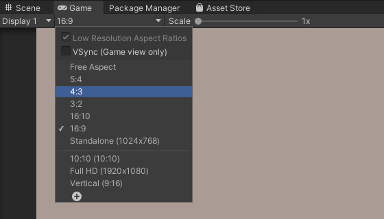
Disable Warning
You might see a warning saying that there isn’t a camera rendering. This would be because we set the camera to render to CameraInput. If you do, right-click the Game tab and uncheck the Warn if No Cameras Rendering option.
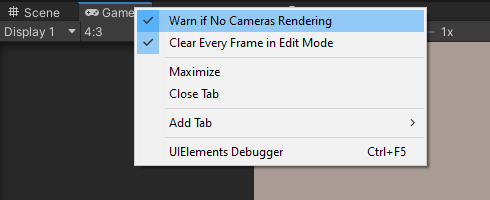
Test it Out
We can finally press the play button and see how it looks.
Summary
We now have a basic implementation of in-game style transfer. It’s pretty inefficient and probably needs a seizure warning. I started with this model architecture for it’s relative simplicity but it was not designed for real-time video. I was surprised to get playable frame rates even at this low of a resolution.
Despite it’s shortcomings, this little demo provides a glimpse at what’s possible. It can also serve as a decent testing environment for trying out different styles. It’s worth noting that the models used in this tutorial were trained on datasets of real-world photos and not video games. I might try making an training dataset using screenshots from video games and see what impact that has on the stylized images.
I already have another style transfer project that I want to try to get working in Unity. This project does a great job of generating consistent video output (i.e. no seizure warning). In the mean time, I recommend checking out Unity’s sample project. They put a lot of work into optimizing it for playable frame rates at more reasonable resolutions.